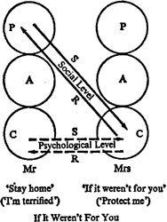

5 · Games
1 · DEFINITION
A GAME is an ongoing series of complementary ulterior transactions progressing to a well-defined, predictable outcome. Descriptively it is a recurring set of transactions, often repetitious, superficially plausible, with a concealed motivation; or, more colloquially, a series of moves with a snare, or ‘gimmick’. Games are clearly differentiated from procedures, rituals, and pastimes by two chief characteristics: (1) their ulterior quality and (2) the payoff. Procedures may be successful, rituals effective, and pastimes profitable, but all of them are by definition candid; they may involve contest, but not conflict, and the ending may be sensational, but it is not dramatic. Every game, on the other hand, is basically dishonest, and the outcome has a dramatic, as distinct from merely exciting, quality.
It remains to distinguish games from the one remaining type of social action which so far has not been discussed. An operation is a simple transaction or set of transactions undertaken for a specific, stated purpose. If someone frankly asks for reassurance and gets it, that is an operation. If someone asks for reassurance, and after it is given turns it in some way to the disadvantage of the giver, that is a game. Superficially, then, a game looks like a set of operations, but after the payoff it becomes apparent that these ‘operations’ were really manoeuvres; not honest requests but moves in the game.
In the ‘insurance game’, for example, no matter what the agent appears to be doing in conversation, if he is a hard player he is really looking for or working on a prospect. What he is after, if he is worth his salt, is to ‘make a killing’. The same applies to ‘the real estate game’, ‘the pajama game’ and similar occupations. Hence at a social gathering, while a salesman is engaged in pastimes, particularly variants of ‘Balance Sheet’, his congenial participation may conceal a series of skilful manoeuvres designed to elicit the kind of information he is professionally interested in. There are dozens of trade journals devoted to improving commercial manoeuvres, and which give accounts of outstanding players and games (interesting operators who make unusually big deals).Transactionally speaking, these are merely variants of Sports Illustrated, Chess World, and other sports magazines.
As far as angular transactions are concerned – games which are consciously planned with professional precision under Adult control to yield the maximum gains – the big ‘con games’ which flourished in the early 1900s are hard to surpass for detailed practical planning and psychological virtuosity.1
What we are concerned with here, however, are the unconscious games played by innocent people engaged in duplex transactions of which they are not fully aware, and which form the most important aspect of social life all over the world. Because of their dynamic qualities, games are easy to distinguish from mere static attitudes, which arise from taking a position.
The use of the word ‘game’ should not be misleading. As explained in the introduction, it does not necessarily imply fun or even enjoyment. Many salesmen do not consider their work fun, as Arthur Miller made clear in his play, The Death of a Salesman. And there may be no lack of seriousness. Football games nowadays are taken very seriously, but no more so than such transactional games as ‘Alcoholic’ or “Third-Degree Rapo’.
The same applies to the word ‘play’, as anyone who has ‘played’ hard poker or ‘played’ the stock market over a long period can testify. The possible seriousness of games and play, and the possibly serious results, are well known to anthropologists. The most complex game that ever existed, that of ‘Courtier’ as described so well by Stendhal in The Charterhouse of Parma, was deadly serious. The grimmest of all, of course, is ‘War’.
2 · A TYPICAL GAME
The most common game played between spouses is colloquially called ‘If It Weren’t For You’, and this will be used to illustrate the characteristics of games in general.
Mrs White complained that her husband severely restricted her social activities, so that she had never learned to dance. Due to changes in her attitude brought about by psychiatric treatment, her husband became less sure of himself and more indulgent. Mrs White was then free to enlarge the scope of her activities. She signed up for dancing classes, and then discovered to her despair that she had a morbid fear of dance floors and had to abandon this project.
This unfortunate adventure, along with similar ones, laid bare some important aspects of the structure of her marriage. Out of her many suitors she had picked a domineering man for a husband. She was then in a position to complain that she could do all sorts of things ‘if it weren’t for you’. Many of her women friends also had domineering husbands, and when they met for their morning coffee, they spent a good deal of time playing ‘If It Weren’t For Him’.
As it turned out, however, contrary to her complaints, her husband was performing a very real service for her by forbidding her to do something she was deeply afraid of, and by preventing her, in fact, from even becoming aware of her fears. This was one reason her Child had shrewdly chosen such a husband.
But there was more to it than that. His prohibitions and her complaints frequently led to quarrels, so that their sex life was seriously impaired. And because of his feelings of guilt, he frequently brought her gifts which might not otherwise have been forthcoming; certainly when he gave her more freedom, his gifts diminished in lavishness and frequency. She and her husband had little in common besides their household worries and the children, so that their quarrels stood out as important events; it was mainly on these occasions that they had anything but the most casual conversations. At any rate, her married life had proved one thing to her that she had always maintained: that all men were mean and tyrannical. As it turned out, this attitude was related to some daydreams of being sexually abused which had plagued her in earlier years.
There are various ways of describing this game in general terms. It is apparent that it belongs in the large field of social dynamics. The basic fact is that by marrying, Mr and Mrs White have an opportunity to communicate with each other, and such an opportunity may be called social contact. The fact that they use this opportunity makes their household a social aggregation, as contrasted with a New York subway train, for example, where people are in spatial contact but rarely avail themselves of the opportunity and so form a dis-social aggregation. The influence the Whites exert on each other’s behaviour and responses constitutes social action. Various disciplines would investigate such social action from different points of view. Since we are here concerned with the personal histories and psychodynamics of the individuals involved, the present approach is one aspect of social psychiatry; some implicit judgement is passed on the ‘healthiness’ of the games studied. This is somewhat different from the more neutral and less committed attitudes of sociology and social psychology. Psychiatry reserves the right to say ‘Just a moment!’, which the other disciplines do not. Transactional analysis is a branch of social psychiatry, and game analysis is a special aspect of transactional analysis.
Practical game analysis deals with special cases as they appear in specific situations. Theoretical game analysis attempts to abstract and generalize the characteristics of various games, so that they can be recognized independently of their momentary verbal content and their cultural matrix. The theoretical analysis of ‘If It Weren’t For You’, Marital Type, for example, should state the characteristics of that game in such a way that it can be recognized just as easily in a New Guinea jungle village as in a Manhattan penthouse, whether it is concerned with a nuptial party or with the financial problems of getting a fishing rod for the grandchildren; and regardless of how bluntly or subtly the moves are made, according to the permissible degrees of frankness between husband and wife. The prevalence of the game in a given society is a matter for sociology and anthropology. Game analysis, as a part of social psychiatry, is only interested in describing the game when it does occur, regardless of how often that may be. This distinction is not complete, but it is analogous to the distinction between public health and internal medicine; the first is interested in the prevalence of malaria, while the latter studies cases of malaria as they come up, in the jungle or in Manhattan.
At the present time the scheme given below has been found the most useful one for theoretical game analysis. No doubt it will be improved as further knowledge accumulates. The first requisite is to recognize that a certain sequence of manoeuvres meets the criteria of a game. As many samples as possible of the game are then collected. The significant features of the collection are isolated. Certain aspects emerge as essential. These are then classified under headings which are designed to be as meaningful and instructive as possible in the current state of knowledge. The analysis is undertaken from the point of view of the one who is ‘it’ – in this case, Mrs White.
Thesis. This is a general description of the game, including the immediate sequence of events (the social level) and information about their psychological background, evolution and significance (the psychological level). In the case of ‘If It Weren’t For You’, Marital Type, the details already given will serve (pages 45–7). For the sake of brevity, this game will henceforth be referred to as IWFY.
Antithesis. The presumption that a certain sequence constitutes a game is tentative until it has been existentially validated. This validation is carried out by a refusal to play or by undercutting the payoff. The one who is ‘it’ will then make more intense efforts to continue the game. In the face of adamant refusal to play or a successful undercutting he will then lapse into a state called ‘despair’, which in some respects resembles a depression, but is different in significant ways. It is more acute and contains elements of frustration and bewilderment. It may be manifested, for example, by the onset of perplexed weeping. In a successful therapeutic situation this may soon be replaced by humorous laughter, implying an Adult realization: ‘There I go again!’ Thus despair is a concern of the Adult, while in depression it is the Child who has the executive power. Hopefulness, enthusiasm or a lively interest in one’s surroundings is the opposite of depression; laughter is the opposite of despair. Hence the enjoyable quality of therapeutic game analysis. The antithesis to IWFY is permissiveness. As long as the husband is prohibitive, the game can proceed. If instead of saying ‘Don’t you dare!’ he says ‘Go ahead!’ the underlying phobias are unmasked, and the wife can no longer turn on him, as demonstrated in Mrs White’s case.
For clear understanding of a game, the antithesis should be known and its effectiveness demonstrated in practice.
Aim. This states simply the general purpose of the game. Sometimes there are alternatives. The aim of IWFY may be stated as either reassurance (‘It’s not that I’m afraid, it’s that he won’t let me’) or vindication (‘It’s not that I’m not trying, it’s that he holds me back’). The reassuring function is easier to clarify and is more in accord with the security needs of the wife; therefore IWFY is most simply regarded as having the aim of reassurance.
Roles. As previously noted, ego states are not roles but phenomena. Therefore ego states and roles have to be distinguished in a formal description. Games may be described as two-handed, three-handed, many-handed, etc., according to the number of roles offered. Sometimes the ego state of each player corresponds to his role, sometimes it does not.
IWFY is a two-handed game and calls for a restricted wife and a domineering husband. The wife may play her role either as a prudent Adult (‘It’s best that I do as he says’) or as a petulant Child. The domineering husband may preserve an Adult ego state (‘It’s best that you do as I say’) or slip into a Parental one (‘You’d better do what I say’).
Dynamics. There are alternatives in stating the psychodynamic driving forces behind each case of a game. It is usually possible, however, to pick out a single psychodynamic concept which usefully, aptly and meaningfully epitomizes the situation. Thus IWFY is best described as deriving from phobic sources.
Examples. Since the childhood origins of a game, or its infantile prototypes, are instructive to study, it is worth-while to search for such cognates in making a formal description. It happens that IWFY is just as frequently played by little children as by grownups, so the childhood version is the same as the later one, with the actual parent substituted for the restricting husband.
Transactional Paradigm. The transactional analysis of a typical situation is presented, giving both the social and psychological levels of a revealing ulterior transaction. In its most dramatic form IWFY at the social level is a Parent-Child game.
Mr White: ‘You stay home and take care of the house.’
Mrs White: ‘If it weren’t for you, I could be out having fun.’
At the psychological level (the ulterior marriage contract) the relationship is Child-Child, and quite different.
Mr White: ‘You must always be here when I get home. I’m terrified of desertion.’
Mrs White: ‘I will be if you help me avoid phobic situations.’
The two levels are illustrated in Figure 7.
Moves. The moves of a game correspond roughly to the strokes in a ritual. As in any game, the players become increasingly adept with practice. Wasteful moves are eliminated, and more and more purpose is condensed into each move. ‘Beautiful friendships’ are often based on the fact that the players complement each other with great economy and satisfaction, so that there is a maximum yield with a minimum effort from the games they play with each other. Certain intermediate, precautionary or concessional moves can be elided, giving a high degree of elegance to the relationship.

Figure 7. A Game
The effort saved on defensive manoeuvres can be devoted to ornamental flourishes instead, to the delight of both parties and sometimes of the onlookers as well. The student observes that there is a minimum number of moves essential to the progress of the game, and these can be stated in the protocol. Individual players will embellish or multiply these basic moves according to their needs, talents or desires. The framework for IWFY is as follows
(1) Instruction-Compliance (‘You stay home’ – ‘All right’).
(2) Instruction-Protest (‘You stay home again’ – ‘If it weren’t for you’).
Advantages. The general advantages of a game consist in its stabilizing (homeostatic) functions. Biological homeostasis is promoted by the stroking, and psychological stability is reinforced by the confirmation of position. As has already been noted, stroking may take various forms, so that the biological advantage of a game may be stated in tactile terms. Thus the husband’s role in IWFY is reminiscent of a backhanded slap (quite different in effect from a palmar slap, which is a direct humiliation), and the wife’s response is something like a petulant kick in the shins. Hence the biological gain from IWFY is derived from belligerence-petulance exchanges: a distressing but apparently effective way to maintain the health of nervous tissues.
Confirmation of the wife’s position – ‘All men are tyrants’ – is the existential advantage. This position is a reaction to the need to surrender that is inherent in the phobias, a demonstration of the coherent structure which underlies all games. The expanded statement would be: ‘If I went out alone in a crowd, I would be overcome by the temptation to surrender; at home I don’t surrender: he forces me, which proves that all men are tyrants.’ Hence this game is commonly played by women who suffer from feelings of unreality, which signifies their difficulty in keeping the Adult in charge in situations of strong temptation. The detailed elucidation of these mechanisms belongs to psychoanalysis rather than game analysis. In game analysis the end product is the chief concern.
Internal psychological advantage of a game is its direct effect on the psychic economy (libido). In IWFY the socially acceptable surrender to the husband’s authority keeps the woman from experiencing neurotic fears. At the same time it satisfies masochistic needs, if they exist, using masochism not in the sense of self-abnegation but with its classical meaning of sexual excitement in situations of deprivation, humiliation or pain. That is, it excites her to be deprived and dominated.
External psychological advantage is the avoidance of the feared situation by playing the game. This is especially obvious in IWFY, where it is the outstanding motivation: by complying with the husband’s strictures, the wife avoids the public situations which she fears.
Internal social advantage is designated by the name of the game as it is played in the individual’s intimate circle. By her compliance, the wife gains the privilege of saying ‘If it weren’t for you’. This helps to structure the time she must spend with her husband; in the case of Mrs White, this need for structure was especially strong because of the lack of other common interests, especially before the arrival of their offspring and after the children were grown. In between, the game was played less intensively and less frequently, because the children performed their usual function of structuring time for their parents, and also provided an even more widely accepted version of IWFY, the busy-housewife variation. The fact that young mothers in America often really are very busy does not change the analysis of this variation. Game analysis only attempts to answer this question without prejudice: given that a young woman is busy, how does she go about exploiting her busyness in order to get some compensation for it?
External social advantage is designated by the use made of the situation in outside social contacts. In the case of the game ‘If It Weren’t For You’, which is what the wife says to her husband, there is a transformation into the pastime ‘If It Weren’t For Him’ when she meets with her friends over morning coffee. Again, the influence of games in the selection of social companions is shown. The new neighbour who is invited for morning coffee is being invited to play ‘If It Weren’t For Him’. If she plays, well and good, she will soon be a bosom friend of the old-timers, other things being equal. If she refuses to play and insists on taking a charitable view of her husband, she will not last long. Her situation will be the same as if she kept refusing to drink at cocktail parties – in most circles, she would gradually be dropped from the guest lists.
This completes the analysis of the formal features of IWFY. In order to clarify the procedure further, the analysis of ‘Why Don’t You – Yes But’, which is the most common game played at social gatherings, committee meetings and psychotherapy groups the world over, should be consulted (page 101).
3 · THE GENESIS OF GAMES
From the present point of view, child rearing may be regarded as an educational process in which the child is taught what games to play and how to play them. He is also taught procedures, rituals and pastimes appropriate to his position in the local social situation, but these are less significant. His knowledge of and skill in procedures, rituals and pastimes determine what opportunities will be available to him, other things being equal; but his games determine the use he will make of those opportunities, and the outcomes of situations for which he is eligible. As elements of his script, or unconscious life-plan, his favoured games also determine his ultimate destiny (again with other things being equal): the payoffs on his marriage and career, and the circumstances surrounding his death.
While conscientious parents devote a great deal of attention to teaching their children procedures, rituals and pastimes appropriate to their stations in life, and with equal care select schools, colleges and churches where their teachings will be reinforced, they tend to overlook the question of games, which form the basic structure for the emotional dynamics of each family, and which the children learn through significant experiences in everyday living from their earliest months. Related questions have been discussed for thousands of years in a rather general, unsystematic fashion, and there has been some attempt at a more methodical approach in the modern orthopsychiatric literature; but without the concept of games there is little possibility of a consistent investigation. Theories of internal individual psychodynamics have so far not been able to solve satisfactorily the problems of human relationships. These are transactional situations which call for a theory of social dynamics that cannot be derived solely from consideration of individual motivations.
Since there are as yet few well-trained specialists in child psychology and child psychiatry who are also trained in game analysis, observations on the genesis of games are sparse. Fortunately, the following episode took place in the presence of a well-educated transactional analyst.
Tanjy, age seven, got a stomach-ache at the dinner table and asked to be excused for that reason. His parents suggested that he lie down for a while. His little brother Mike, age three, then said, ‘I have a stomach-ache too,’ evidently angling for the same consideration. The father looked at him for a few seconds and then replied, ‘You don’t want to play that game, do you?’ Whereupon Mike burst out laughing and said, ‘No!’
If this had been a household of food or bowel faddists, Mike would also have been packed off to bed by his alarmed parents. If he and they had repeated this performance several times, it might be anticipated that this game would have become part of Mike’s character, as it so often does if the parents cooperate. Whenever he was jealous of a privilege granted to a competitor, he would plead illness in order to get some privileges himself. The ulterior transaction would then consist of: (social level) ‘I don’t feel well’ + (psychological level) ‘You must grant me a privilege, too.’ Mike, however, was saved from such a hypochondriacal career. Perhaps he will end up with a worse fate, but that is not the issue. The issue is that a game in statu nascendi was broken up right there by the father’s question and by the boy’s frank acknowledgement that what he proposed was a game.
This demonstrates clearly enough that games are quite deliberately initiated by young children. After they become fixed patterns of stimulus and response, their origins become lost in the mists of time and their ulterior nature becomes obscured by social fogs. Both can be brought into awareness only by appropriate procedures : the origin by some form of analytic therapy and the ulterior aspect by antithesis. Repeated clinical experience along these lines makes it clear that games are imitative in nature, and that they are initially set up by the Adult (neopsychic) aspect of the child’s personality. If the Child ego state can be revived in the grown-up player, the psychological aptitude of this segment (the Adult aspect of the Child ego state) is so striking, and its skill in manipulating people so enviable, that it is colloquially called ‘The Professor’ (of Psychiatry). Hence in psychotherapy groups which concentrate on game analysis, one of the more sophisticated procedures is the search for the little ‘Professor’ in each patient, whose early adventures in setting up games between the ages of two and eight are listened to by everyone present with fascination and often, unless the games are tragic, with enjoyment and even hilarity, in which the patient himself may join with justifiable self-appreciation and smugness. Once he is able to do that, he is well on his way to relinquishing what may be an unfortunate behaviour pattern which he is much better off without.
Those are the reasons why in the formal description of a game an attempt is always made to describe the infantile or childhood prototype.
4 · THE FUNCTION OF GAMES
Because there is so little opportunity for intimacy in daily life, and because some forms of intimacy (especially if intense) are psychologically impossible for most people, the bulk of the time in serious social life is taken up with playing games. Hence games are both necessary and desirable, and the only problem at issue is whether the games played by an individual offer the best yield for him. In this connexion it should be remembered that the essential feature of a game is its culmination, or payoff. The principal function of the preliminary moves is to set up the situation for this payoff, but they are always designed to harvest the maximum permissible satisfaction at each step as a secondary product. Thus in ‘Schlemiel’ (making messes and then apologizing) the payoff, and the purpose of the game, is to obtain the forgiveness which is forced by the apology; the spillings and cigarette burns are only steps leading up to this, but each such trespass yields its own pleasure. The enjoyment derived from the spilling does not make spilling a game. The apology is the critical stimulus that leads to the denouement. Otherwise the spilling would simply be a destructive procedure, a delinquency perhaps enjoyable.
The game of ‘Alcoholic’ is similar; whatever the physiological origin, if any, of the need to drink, in terms of game analysis the imbibing is merely a move in a game which is carried on with the people in the environment. The drinking may bring its own kinds of pleasure, but it is not the essence of the game. This is demonstrated in the variant of ‘Dry Alcoholic’, which involves the same moves and leads to the same payoff as the regular game, but is played without any bottles (page 66).
Beyond their social function in structuring time satisfactorily, some games are urgently necessary for the maintenance of health in certain individuals. These people’s psychic stability is so precarious, and their positions are so tenuously maintained, that to deprive them of their games may plunge them into irreversible despair and even psychosis. Such people will fight very hard against any antithetical moves. This is often observed in marital situations when the psychiatric improvement of one spouse (i.e., the abandonment of destructive games) leads to rapid deterioration in the other spouse, to whom the games were of paramount importance in maintaining equilibrium. Hence it is necessary to exercise prudence in game analysis.
Fortunately, the rewards of game-free intimacy, which is or should be the most perfect form of human living, are so great that even precariously balanced personalities can safely and joyfully relinquish their games if an appropriate partner can be found for the better relationship.
On a larger scale, games are integral and dynamic components of the unconscious life-plan, or script, of each individual; they serve to fill in the time while he waits for the final fulfilment, simultaneously advancing the action. Since the last act of a script characteristically calls for either a miracle or a catastrophe, depending on whether the script is constructive or destructive, the corresponding games are accordingly either constructive or destructive. In colloquial terms, an individual whose script is oriented towards ‘waiting for Santa Claus’ is likely to be pleasant to deal with in such games as ‘Gee You’re Wonderful, Mr Murgatroyd’, while someone with a tragic script oriented towards ‘waiting for rigor mortis to set in’ may play such disagreeable games as ‘Now I’ve Got You, You Son of a Bitch’.
It should be noted that colloquialisms such as those in the previous sentence are an integral part of game analysis, and are freely used in transactional psychotherapy groups and seminars. The expression ‘waiting for rigor mortis to set in’ originated in a dream of a patient, in which she decided to get certain things done ‘before rigor mortis set in’. A patient in a sophisticated group pointed out what the therapist had overlooked: that in practice, waiting for Santa Claus and waiting for death are synonymous. Since colloquialisms are of decisive importance in game analysis, they will be discussed at length later on.
5 · THE CLASSIFICATION OF GAMES
Most of the variables used in analysing games and pastimes have already been mentioned, and any of them can be used in classifying games and pastimes systematically. Some of the more obvious classifications are based on the following factors:
1. Number of players: two-handed games (Frigid Woman), three-handed games (Let’s You and Him Fight), five-handed games (Alcoholic) and many-handed games (Why Don’t You – Yes But).
2. Currency used: words (Psychiatry), money (Debtor), parts of the body (Polysurgery).
3. Clinical types: hysterical (Rapo), obsessive-compulsive (Schlemiel), paranoid (Why Does This Have to Happen to Me), depressive (There I Go Again).
4. Zonal: oral (Alcoholic), anal (Schlemiel), phallic (Let’s You and Him Fight).
5. Psychodynamic: counterphobic (If It Weren’t for You), projective (PTA), introjective (Psychiatry).
6. Instinctual: masochistic (If It Weren’t for You), sadistic (Schlemiel), fetishistic (Frigid Man).
In addition to the number of players, three other quantitative variables are often useful to consider:
1. Flexibility. Some games, such as Debtor and Polysurgery, can be played properly with only one kind of currency, while others, such as exhibitionistic games, are more flexible.
2. Tenacity. Some people give up their games easily, others are persistent.
3. Intensity. Some people play their games in a relaxed way, others are more tense and aggressive. Games so played are known as easy and hard games, respectively.
These three variables converge to make games gentle or violent. In mentally disturbed people, there is often a noticeable progression in this respect, so that one can speak of stages. A paranoid schizophrenic may initially play a flexible, loose, easy game of first-stage ‘Ain’t It Awful’ and progress to an inflexible, tenacious, hard third stage. The stages in a game are distinguished as follows:
(a) A First-Degree Game is one which is socially acceptable in the agent’s circle.
(b) A Second-Degree Game is one from which no permanent irremediable damage arises, but which the players would rather conceal from the public.
(c) A Third-Degree Game is one which is played for keeps, and which ends in the surgery, the courtroom or the morgue.
Games can also be classified according to any of the other specific factors discussed in the analysis of IWFY: the aims, the roles, the most obvious advantages. The most likely candidate for a systematic, scientific classification is probably one based on the existential position; but since knowledge of this factor is not yet sufficiently advanced, such a classification will have to be postponed. Failing that, the most practical classification at present is probably a sociological one. That is what will be used in the next section.
NOTES
Due credit should be given to Stephen Potter for his perceptive, humorous discussions of manoeuvres, or ‘ploys’, in everyday social situations,2 and to G. H. Mead for his pioneering study of the role of games in social living.3 Those games that lead to psychiatric disabilities have been systematically studied at the San Francisco Social Psychiatry Seminars since 1958, and this sector of game analysis has recently been approached by T. Szasz.4 For the role of games in the group process, the present writer’s book on group dynamics should be consulted.5
REFERENCES
1. Maurer, D. W., The Big Con, The Bobbs-Merrill Co., New York, 1940.
2. Potter, S., Theory and Practice of Gamesmanship, Rupert Hart-Davis, 1947.
3. Mead, G. H., Mind, Self and Society, Cambridge University Press, 1935.
4. Szasz, T., The Myth of Mental Illness, Secker & Warburg, 1961.
5. Berne, E., The Structure and Dynamics of Organizations and Groups, Pitman Medical, 1963.